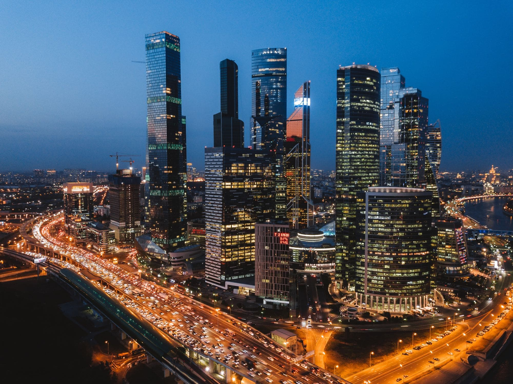
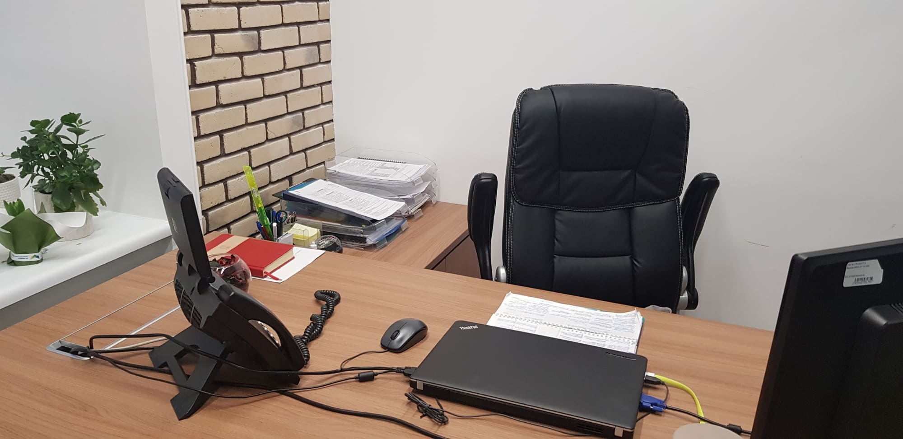
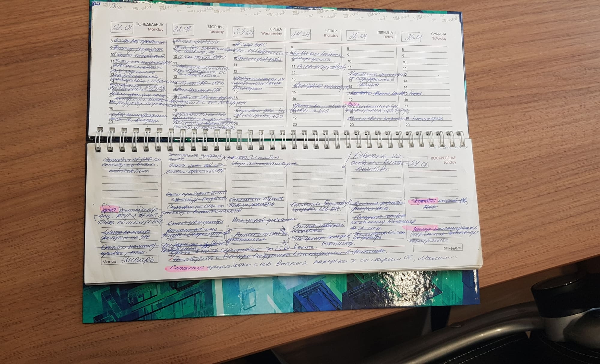
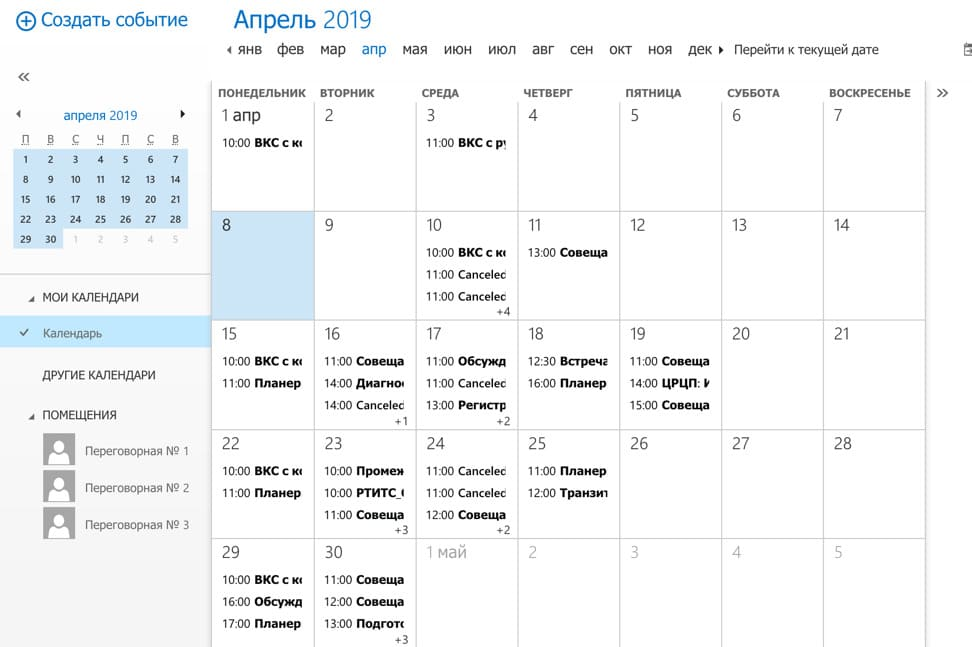

Последние три года я работаю в Москве. За это время я поняла на сколько сильно отличается рабочий темп в этом городе, от любого другого. До этого я работала в Твери, Владимире и Смоленске, сейчас часто езжу в командировки по городам России и, поверьте, мне есть с чем сравнить.
Москва – это гигантский мегаполис, в котором ежедневно приходиться преодолевать большие расстояния, постоянно планировать свои маршруты передвижения, чтобы сэкономить время по максимуму, планировать каждое свое действие (встречи, посещения врача, косметолога и пр. обычные события жизни), так как каждое из них будет достаточно затратным (в плане времени, энергии и даже эмоций). Ежесекундно находясь на улицах Москвы тебя окружает огромное количество людей, спешащих по своим делам. Нужно постоянно быть внимательным, так сказать «на чеку», к этому располагает размер города и количество людей в нем живущих и приезжающих. Как говорят в автошколе, ты должен двигаться со скоростью потока, а если это не так, то ты начинаешь создавать проблемы и себе и окружающим, и на дороге становится некомфортно. В Москве тоже самое, или ты в потоке или этот поток тебя начинает вытеснять. Нужно быть способным адаптироваться к московскому ритму жизни и работы, он такой же безумный, быстрый и скоротечный, как движение на улицах.
Живя в Москве нельзя не планировать, иначе очень быстро начинает формироваться хроническое состояние тотальной нехватки времени. Как следствие нарастает негатив и стресс. Настроение становится угнетенным, складывается ощущение «белки в колесе», которая все время куда-то бежит, но никуда не успевает. В общем, прямой путь к депрессии. Кстати, это одна из причин, почему некоторые люди переехав жить в Москву через некоторое время принимают решение вернуться обратно в свой родной город. Они не могут перестроить привычный, ранее у них сформировавшийся образ жизни – спокойный, размеренный, наполненный свободным временем, где все под рукой и в любую минуту ты можешь выйти из дома сеть в машину или на общественный транспорт и через 10-15 минут оказаться в любой части города: в кино, в гостях, в ресторане, на работе, на приеме у доктора или в детском саду/школе. Когда район обитания понятный и досконально вам знакомый, вы чувствуете себя комфортно. В Москве это не так. Город на столько большой, что обычно дальше своего района проживания и работы, ты уже ничего толком не знаешь. Я думаю, чтобы более-менее освоиться в Москве, привыкнуть к городу и его окрестностям, нужно прожить тут лет 10, не меньше.
Мой рабочий день в Москве, как правило, начинается в районе 10 часов утра с чашки кофе и завершается глубоко за 19:00. Ритм в котором работают люди в нашем офисе бешенный. Все стремятся сделать по больше и по быстрее, так как объем ежедневных задач крайне высокий и более того, задачи носят разнонаправленный характер. Переносить задачи, которые ты не успел сегодня сделать, на завтра не принято, так как все понимают, что завтра к ним добавится еще столько же и это будет накапливаться как снежным ком. Чтобы этого не допустить нужно стремиться к тому, чтобы все запланированные задачи на день, решались в этот же день. Перенос задач на другие дни может быть только в случае изменения производственной ситуации, но не по причине «Я не успел сегодня». Если не успел значит надо задержаться на работе и доделать.
Лично я не сторонник сверхурочной работы и всегда стремлюсь успевать все сделать в рамках рабочего графика, и добиваюсь я этого через постоянное совершенствование своих навыков планирования и оптимизации, но все равно бывают ситуации, когда приходиться сильно задерживаться в офисе.
В этой статье я решила поделиться инструментами, которые я использую для планирования. Порассуждаю о том влияет ли темперамент и характер на рабочую успеваемость и что же такое на самом деле многозадачность. Для начала я расскажу, чем на моей текущей работе мне приходится ежедневно заниматься, из чего состоит мой обычный рабочий день. Я не буду вдаваться в подробности моих должностных обязанностей, отмечу только то, что я руководитель и имею в прямом подчинении порядка 20 человек, а это значит, что мои рабочие функции делятся на управленческие и исполнительские, т.к. у меня тоже есть руководитель.
Из чего состоит мой рабочий день.
Я работаю с тремя основными инструментами коммуникации это 1С:ДО (документооборот), телефон и Outlook. Все основные рабочие задачи поступают именно из этих источников. Объем ежедневных коммуникаций, которые приходят по этим каналам, примерно, такой: порядка 50-80 электронных писем, 10-15 задач на согласование и ознакомление в 1С:ДО и 15-30 звонков в день. Теперь поподробнее о том, во что превращается этот объем ежедневно:
| Активность | Ср. время на 1 активность | Общие затраты, ч. |
|---|---|---|
| Встречи, 3-6 в день | От 10 мин. до 1.5 ч. | 3 ч. |
| Вычитка 2-4 док-ов* | От 10 мин. до 1 ч. | 2 ч. |
| Общение по телефону | От 3 до 10 мин. | 0.5 ч. |
| Разбор эл. почты | 30 мин. утром и вечером | 1 ч. |
| Разбор задач в 1С | 15 мин. в обед и вечером | 0.5 ч. |
| Обед | 4 перерыва (по 10-30 мин.) | 1 ч. |
| Итого: | 8 часов | |
Вот так, примерно, выглядит мой средний объем задач в день. Конечно, день на день не приходится. В какие-то дни у меня может быть больше встреч и меньше почты или наоборот. Иногда, я имею возможность провести большую часть дня на своем рабочем месте, посвятив ее работе исключительно с документами или общению с сотрудниками. В этой таблице я представила некую усредненную картину моих задач.
Безусловно не обходится и без незапланированных срочных задач, которые иногда врываются в четко распланированный день, особенно часто это бывает в периоды, когда я и моя команда находимся в работе над каким-нибудь новым проектом. Чем больше операционных задач в течении дня, тем рабочий день проходит спокойнее, а вот если превалируют проектные задачи, то вероятность «хаоса» и появления незапланированных активностей вырастает в разы.
 На фото мое рабочее место. Меня окружают только самые необходимые вещи, ничего лишнего.Мои правила коммуникаций на работе.
Есть три основных правила коммуникации, которых я придерживаюсь на работе:
- Я всегда отвечаю на звонки коллег или обязательно перезваниваю в тот же день, когда мне поступил звонок. Если нет возможности созвониться я использую WhatsApp.
- В конце рабочего дня у меня в почте нет непрочитанных писем в 99% случаев. Каждое письмо мной прочитано и на него предоставлен ответ. Вариантов ответа два: 1. Ответ по существу запроса, содержащегося в письме или 2. Ответ с обратной связью что я письмо получила, взяла в работу и ответ будет предоставлен и указываю когда.
- Если я сдвигаю сроки исполнения задач и эти сроки мной ранее были заявлены руководителю или коллегам, я всегда заранее предупреждаю их об изменении и обозначаю новые сроки.
Эти правила помогают мне четко планировать мою нагрузку, но также они помогают моим коллегам планировать их нагрузку, так как я всегда даю обратную связь, когда от меня можно ожидать информацию по их запросам. Благодаря этому, они могут более точно планировать свои задачи, которые зависят от моих ответов на их запросы.
Я всегда прошу своих подчиненных в обязательном порядке использовать правило 2 в части двух видов ответов на письма и правило 3 в общении со мной. Так как это дает мне возможность более точно планировать свою работу и быть уверенной в том, что сотрудники приняли в работу поставленные мной задачи.
Инструменты планирования: ежедневник, планинг и Outlook.
Для планирования моего рабочего дня я использую три основных инструмента: ежедневник, планинг и календарь в Outlook.
Ежедневник
Ежедневник служит мне для фиксирования итогов всех встреч, в которых я участвую. До недавнего времени я на все встречи ходила с бумажным вариантом и от руки все записывала, потом переносила итоги встреч в электронный протокол для рассылки участникам. Получалось не очень рациональное расходование рабочего времени. В этом году я перешла на электронный ежедневник, на все встречи хожу с ноутбуком. По ходу встреч все фиксирую сразу в электронном виде и буквально в течении 5 минут после окончания встречи всем тут же рассылаю ее итоги. При моей возросшей нагрузке, с недавних пор, это стало хорошим способом экономии времени. Плюс в электронном ежедневнике удобно видеть хронологию всех встреч, когда с кем по какому вопросу встречались, что обсуждали и о чем договорились. Ну и бумажный вариант имеет свойство заканчиваться, хранить архивы бумажных ежедневников не очень-то удобно, а осуществлять в них поиск информации еще сложнее. С электронным вариантом такой проблемы нет. Можно хранить сколь угодно долго все итоги встреч и в любой момент поднять информацию.
Из бумажных, мне нравятся недатированные ежедневники с желтой бумагой.Даже если я не веду протокол встреч, например, это делает другой сотрудник, то для себя я все равно по ходу обсуждения всегда фиксирую ключевые моменты, которые обсудили и задачи, которые необходимо взять в работу. Мне лично это помогает прямо в процессе встречи, собрания структурировать информацию и легко ее переложить тут же в свой график загрузки.
Иногда я наблюдаю за своими коллегами, кому приходиться фиксировать итоги собраний. В ходе своих наблюдений я отметила, что каждый из них делает это по-своему. Например, приносят на встречу диктофон, всю встречу ничего не фиксируют, диктофон пишет. После встречи забирают его и повторно прослушивают информацию уже на своем рабочем месте и перекладывают ее в протокол. Такие протоколы мы обычно получаем в лучшем случае на следующий день, в худшем дня через два, т.к. очень много времени уходит на повторное прослушивание записи встречи. Иногда, коллеги фиксируют итоги встречи на чистых листах бумаги, выглядит это у всех по-разному, кто-то пишет все подряд, кто-то выборочно фиксирует информацию. Потом после встречи забирают листы на свое рабочее место и оформляют протоколы. Довольно часто, при таком варианте фиксации информации, от коллег поступают уточняющие звонки в процессе создания протокола. Что-то забыли записать, что-то записали и не могут понять к чему это отнести ну и т.д.
Лично я для себя сделала вывод, что самый лучший вариант создавать протокол встречи – это сразу по ее ходу. Но для этого надо обладать рядом способностей. Во-первых, очень быстро писать или еще лучше очень быстро печатать (я обладаю слепым десятипальцевым методом печати, кто не знает, что это, очень рекомендую узнать и освоить). Во-вторых, важно уметь на ходу речь говорящих/выступающих на встречах людей переформулировать в позиции, заключения и задачи. Излагать их мысли деловым языком, подходящим для протоколов. И в-третьих, нужно быть способным одновременно внимательно слушать все происходящее на встрече и тут же записывать с учетом второй способности. Среди своих коллег я знаю только нескольких кто обладает всеми тремя способностями. И да, я одна из них.
В связи с вышесказанным, тем людям кто по долгу своей работы должен протоколировать встречи, я рекомендую делать это в течении встречи в электронном виде, стараться все записывать сразу в правильных формулировках и для надежности писать на диктофон, чтобы выборочно можно было прослушать те куски информации, которые не успел записать или не очень понял. Ну и профессионализм приходит с опытом, чем больше за свою практику вы напишите протоколов, тем лучше с каждым разом и быстрее это будет получаться.
Итого, ежедневник для меня — это место фиксации итогов встреч, собраний, обсуждений и любых других мероприятий, в которых участвует больше чем один человек и что-то обсуждается.
Планинг
Планинг – это мой любимый инструмент планирования, с ним я уже дружу более 10 лет. На моем рабочем месте всегда перед клавиатурой лежит планинг с разворотом на текущую рабочую неделю. На каждый день я короткими формулировками фиксирую все задачи, которые мне нужно в этот день выполнить. Фиксирую напоминания: что прочитать/согласовать/написать, кому ответить/написать/позвонить/выслать информацию, время и место встреч, важные события (например, дни рождения коллег), регулярные события, перетекающие из недели в неделю и пр.
 Люблю писать ручками с толщиной линии не больше 0.5мм.Как я работаю с планингом?
Выполненные задачи я вычеркиваю. Очень важные задачи я дополнительно выделяю красным маркером. Задачи, невыполненные на текущей недели, но и не запланированные к переносу на другую неделю я оставляю не вычеркнутыми, это дает возможность пролистать любую неделю назад и посмотреть, что запланировала, но до сих пор не сделала. Это как правило, задачи из категории "надо когда-нибудь сделать". Это не важные и не срочные задачи и их все время откладываешь. Задачи, которые я переношу на другую неделю я просто вычеркиваю с текущей и записываю на новую.
Планинг позволяет мне держать в голове только задачи текущей недели. Если возникает задача, которую надо будет сделать через три недели, то я перелистываю планинг на три недели вперед, записываю там эту задачу и тут же про нее забываю. Когда придет время я до нее дойду и вспомню. Мне это помогает не перегружать мозг излишней информацией и не хвататься в моменте за выполнение задачи, которая только что пришла, а сделать ее надо будет через 3 недели. Я приучила себя «не хвататься» сразу за исполнение задач, которые в течении дня на меня вываливаются с довольно длинным сроком исполнения. При высокой нагрузке очень важно уметь это делать – откладывать задачи, зная, что их не нужно делать прямо сейчас. Раньше я так не могла, знаете был такой «хватательный рефлекс» - упала задача бери и тут же делай, неважно что срок у нее 2-3 недели, а из-за этого неизбежно начинал страдать план текущего дня. В общем планинг помогает мне избегать таких ситуаций.
Те мои коллеги кто видит, что я пользуюсь планингом, иногда, удивляются как мне хватает всего нескольких узких строчек, чтобы отразить все задачи на день. Говорят, что им было бы мало места, т.к. формулировки задач бывают достаточно объемными. На это я отвечаю: «Краткость, сестра таланта». Надо еще научиться коротко, лаконично изложить мысль и не забыть через час/день что ты имел в виду написав «Отпр. Отчет БПК по ЦИПП за Апр.» или «Прочитать Пр. к КС, дать ОС РГ». Для этого я использую общепринятые сокращения в русском языке, плюс придумала свои, ну и конечно активно использую профессиональную терминологию, принятую в компании и аббревиатуры.
Примеры сокращений для моего планинга:
- ОС – обратная связь
- РГ – руководитель группы
- Отпр. – отправить
- Исх. – исходящее
- Вх. – входящее
- КЦ – колл-центр
- КС – концессионное соглашение
- Пр. – приложение
- ЦИПП – центр информационной поддержки пользователей
- Согл.- согласовать
- ФТ – функциональные требования
- БП – бизнес-процессы
Сокращений в моем деловом письменном языке, который я использую для планирования огромное количество. Поэтому в планинге на небольшом количествеве строк у меня умещаются все задачи на день. А благодаря этому всегда перед глазами объем работы на день и есть понимание что уже выполнено, а что осталось сделать. Фиксирую я задачи на день в порядке от самых важных к менее важным. И отдельным блоком на начальных или конечных строчках перечень встреч с указанием времени и места:
10:00 ВКС с РКУ ОП №1 (видеоконференция с руководителя коммерческих управлений обособленных подразделений, переговорная №1),
11:00 Транзит, №3 (еженедельная встреча по проекту Транзит, переговорная №3). Как видите в совершенно небольшой объем текста заложены целые длинные предложения.
Я пробовала однажды начать вести планинг в электронной форме, но не смогла адаптироваться к нему, т.к. для меня важно, пока я нахожусь на рабочем месте, видеть свои задачи перед глазами. Я не держу их в своей памяти вообще. Для этого есть планинг, а используя планирование в электронном виде, надо тратить время на открывание планинга на мониторе и не всегда получается держать его перед глазами. В общем не оценила я электронный вариант и вообще я люблю писать.
В заключение, скажу про планинг, что за 10 лет использования, этот инструмент зарекомендовал себя отлично, лично для меня. Не представляю свой рабочий день без него. А также, он очень компактный и его с собой легко носить!
Календарь Outlook
Календарь Outlook – это продолжение планининга. В нем живут все встречи, в которых я участвую, с указанием времени, места, темы, состава участников и рабочих материалов, если применимо. У меня настроены уведомления о встречах на ПК и телефон за 15 и 5 минут до начала встречи. Мой календарь видят мои подчиненные и коллеги с кем мы чаще всего встречаемся, это позволяет им назначать мне встречи опираясь на мой график. Как правило встречи, назначенные с учетом моего календаря, в 99% я принимаю. А вот если встречу мне назначили наобум, то высока вероятность, что на это время у меня уже все занято. Рекомендую всем кто использует этот инструмент, а особенно загруженным коллегам, «расшарить» свой календарь в Outlook для других людей.
 На фото реальный скрин шот моего календаря.Сейчас предлагается огромное количество инструментов для планирования. Считаю, что каждый человек может найти себе что-то по вкусу и цвету, но главное по эффективности. Выбранные мной инструменты для планирования облегчают мой рабочий процесс и помогают его структурировать и распланировать. И еще, мне кажется, что инструментов не должно быть много, 2-3 и каждый заточен под определенную задачу, которую вы с его помощью будете решать. Чем больше задач вам ежедневно приходиться выполнять, тем выше роль тех инструментов планирования что вы используете. Я знаю людей, кто имеет бешенную нагрузку, но к сожалению, не имеет выработанного подхода к планированию. Эти люди зачастую не помнят с кем и о чем говорили, и о чем договорились. Часто меняют свое мнение по тому или иному вопросу, т.к. не помнят что ранее уже высказывались по этому вопросу. Много времени тратят на незапланированные активности, которые хаотично врываются в их график и в итоге они не успевают сделать ключевые задачи, которые хотели выполнить в конкретный день. Скажу честно, меня это раздражает, я не понимаю таких людей.
Влияние темперамента на рабочую успеваемость.
Лично я считаю, что связь однозначно есть. На протяжении своей трудовой деятельность я сталкиваюсь с абсолютно разными людьми и все они по-разному подходили к планированию своего рабочего времени. Самыми эффективными, по-моему мнению, являются люди пунктуальные, высоко самоорганизованные (самостоятельные), с гибким умом, достаточно уравновешенные, способные взвешенно подходить к любой задаче, в тоже время достаточно самокритичные и способные брать на себя ответственность. Как только в этом перечне появляются такие качества как: импульсивность, излишняя проактивность (хорошего должно быть в меру), неуравновешенность, отсутствие пунктуальности, небрежность в делах, «философский» ум (когда человек может очень долго рассуждать на ту или иную тему, прежде чем примет решение по дальнейшим действиям), появляются проблемы с планированием. Это не весь набор качеств положительно и отрицательно, влияющих на процесс планирования, но довольно часто лично мне встречающийся.
Я считаю, что осознавая себя как личность, понимая свой темперамент, свои черты характера, можно создать свой личный эффективный метод планирования. Подобрать те инструменты планирования, которые будут отражать тебя и будут лично тебе удобны. Написано огромное количество книг и создано множество тренингов о тайм менеджементе, но не существует универсального способа, освоив которых вы станете мастером планирования. Нужно изучить разные походы к этому вопросу и из совокупности полученных знаний создать свой собственный эффективный способ планирования, который будет подходить только вам.
Что такое умение работать в режиме многозадачности?
Что такое многозадачность? Довольно часто в описании вакансий сейчас встречается такое требование – умение работать в режиме многозадачности.
Вот что нам говорит Википедия на этот счет: (англ. multitasking) — свойство операционной системы или среды выполнения обеспечивать возможность параллельной (или псевдопараллельной) обработки нескольких задач.
Это только часть определения, которую можно отнести к человеку. И знаете, я согласна в этом определении с отступлением, которое дано – псевдопараллельной. На самом деле наш мозг не способен выполнять несколько операций/действий одновременно, он может быстро переключаться между действиями и тем самым создает иллюзию одновременного выполнения действий. Существует мнение, что постоянно переключаясь между задачами, на самом деле мы работаем медленнее, так как нам приходиться каждый раз вспоминать определенный объем информации по задаче на которую мы переключились, и плюс переключаться между ролями (руководитель, подчинённый, эксперт и пр.) из-за этого наш мозг быстрее устает и становится менее производительным. Даже если это так, то мы все равно не сможем изменить подход к работе, который сформировался у каждого свой. И так как зачастую работать приходиться именно в режиме многозадачности, то в такой ситуации для меня выход один – научиться быстро переключаться между задачами и также быстро погружаться в суть каждой из них.
Я работаю в постоянном режиме многозадачности, переключаться между ролями и задачами я вынуждена практически каждую минуту своего рабочего времени и это неизбежно, иначе я просто перестану успевать делать свою работу. К примеру, конкретно на сегодняшний день, я работаю на трех разных должностях и имею как минимум 5 разных ролей. Должности: директор департамента обслуживания клиентов, заместитель коммерческого директора, коммерческий директор в дочерней компании по совместительству. Роли: руководитель, исполнитель, эксперт, наставник, администратор. У каждой должности и роли свой набор функций и задач, а также свой уровень ответственности.
В итоге, чтобы качественно выполнять работу по каждой из функций важно уметь делать две вещи:
- Планировать,
- Быстро переключаться между задачами, т.е. работать в режиме многозадачности.
Свое мнение о планировании я написала выше, а вот развитие умения работать в режиме многозадачности – это на мой взгляд крайне сложная задача. Нужно постоянно тренировать свой мозг, учить его быть гибким, быстро соображающим, анализирующим. Нужно развивать свой эмоциональный интеллект, быть стрессоустойчивым к постоянно изменяющимся ролям и задачам. По каждому их этих пунктов можно написать отдельную статью, но я сделаю один вывод:
Необходимо работать над собой, развивать свой профессиональные и личностные навыки и качества (так называемые soft skills), которые вам нужны на конкретном месте работы, и тогда все будет хорошо!
Дорогие читатели, а что вы думаете о многозадачности и влиянии темперамента на рабочую успеваемость? Мне будет очень интересно услышать ваше мнение в комментариях к этой статье.